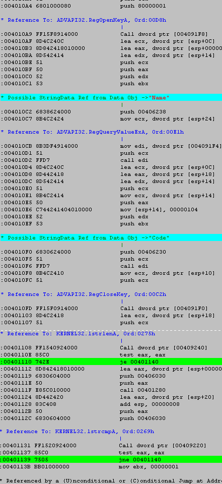

Cours de Crack
(3eme Partie)
Dans le second cours, nous avons aborde une erreur bien commune a tous les debutants...
Maintenant, je vais tenter de vous expliquer comment trouver d'autres endroits "interessant"
dans un listing...
Voyons d'abord les differences entre une version shareware et une version enregistrée.
Voici ce qui est susceptible d'appparaitre dans un Shareware :
Un vilain NAG-SCREEN apparrait a chaque fois qu'on lance ou qu'on sort du programme...
Dans la barre de titre ou dans la barre d'état du programme, il y a marqué UNREGISTERED...
Dans la fenetre "About", il y a marquer UNREGISTERED USER, ou quelquechose comme ca...
Dans les menus, il y a un bouton "Register" qui nous permet d'entrer un code pour s'enregistrer...
Au bout de 30 jours, le programme nous lance un nag screen qui nous dit qu'on doit s'enregistrer...
Tout ca n'apparait plus dans la version "REGISTERED"...logique :)
En fait, le programme doit chercher si on est enregistré ou non a chaque lancement...
Mais comment le prog sait si on s'est enregistrer ??
Eh bien, lorsqu'on s'enregistre correctement (avec un vrai code...),
le programme inscrit les informations d'enregistrement dans un fichier annexe, ou dans la base
de registre de Windows...
Maintenant, un peu de pratique... On va reprendre notre bon vieux STARTCLEAN... ;)
Comme on l'a vu precedemment, il nous met un mechant NAG SCREEN a chaque demarrage...
Si vous le cracker comme dans la 1ere partie du cours, vous pourrez vous enregistrer avec n'importe quel code...
A partir du moment ou vous serez enregistré, StartClean va inscrire un truc dans la base de registre.
Ce "truc" en question, c'est ce qui va permettre a StartClean de se "souvenir" que vous
vous etes enregistré...
Jusque la, j'espere que vous suivez :)
Essayons donc d'analyser la logique du programe lorsqu'on le lance:
1) le programme va acceder a la base de registre de Windows.
2) si le prog ne trouve aucune information d'enregistrement, vous etes considerez comme UNREGISTERED :(
3) si le prog trouve les informations d'enregistrement, vous etes considerer comme REGISTERED ;)
Pas compliqué, n'est-ce pas ? Il suffit de retrouver ce saut conditionnel...
Comment ?...humhum...voyons ca etape par etape....
Lancer StartClean...essayer de vous enregistrer...la vous devez indiquez une valeur "Name" et une valeur "Code".
Retenez le nom des deux valeurs : "name" pour le nom, "code" pour le serial...
Lancer WDasm et decompiler une copie de StartClean.exe...
Placer vous au debut du code (code start) et faites une recherche sur le mot "Name"...
La, vous devriez tombez a la ligne 175...
En regardant un peu au dessus et un peu au dessous, ca donne ca :

Là, vous pouvez voir 2 trucs interressant : RegOpenKey et RegQueryValue.
Ces fonctions permettent au programme de prendre des informations contenues dans
la base de registre...
Elles sont suivis de LstrLenA et LstrCmpA, qui permette de verifiez la longueur d'une chaine de caracteres
et d'effectuer des comparaisons...
On peut etre quasiment sûr que c'est le moment decisif ou le programme va determinez si vous etes enregistré!
Dans chacune des fonction LstrxxxA, il y a un "Test eax, eax" suivi d'un saut vers l'adresse 00401140...
Essayons de "nopper" (cf cour 1) ces deux sauts...
Pourquoi les deux ? Parceque si on élimine que le premier, on va sauter quand on va arriver au deuxieme...
Et si on noppe que le deuxieme, on aura meme pas le temp d'y arriver puisqu'on aura deja sauter au premier !
Lancer l'editeur Hexadecimal et faites une recherche sur 85C0742E8D84 (cf cour 2).
Remplacer le 742E par un 9090...Ensuite, faites une nouvelle recherche sur
85C07505BB01 et remplacer le 7505 par un 9090...
L'heure est venu de savoir si on a bien raisonner ou non...
Lancer votre StartClean ainsi modifié...CA MARCHE !!
Meme pas besoin de s'enregistrer, le programme pense qu'il l'est deja :)
Le principe est donc assez simple :
Le programme va cherchez les informations d'enregistrement dans la base de registre,
mais qu'il les trouve ou non, quelles soient bonnes ou non, le programme agira comme si tout etait OK !
Pourquoi ? Parcequ'on a enlevez les sauts qui s'effectuaient si une des conditions n'etaient pas remplies...
Je pense que maintenant vous avez assimilez le principe du saut conditionnel...
A travers le petit programme qu'est StartClean, vous avez meme pu vous exercez un peu...
Vous avez egalement appris a evitez un petit piege dans le 2eme cours...
Cependant, le cours n'est pas tout a fait fini, et il est necessaire de vous approtez encore quelques precisions sur certains point que
nous n'avons pas encore traité...